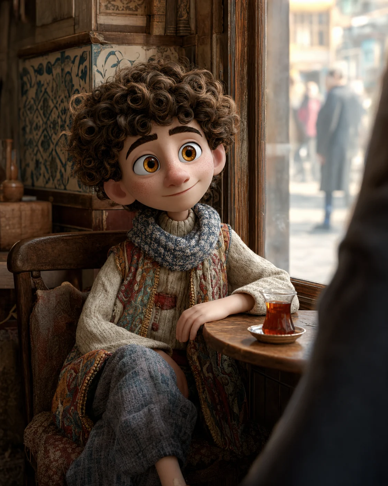
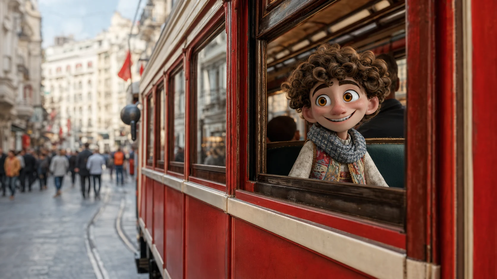
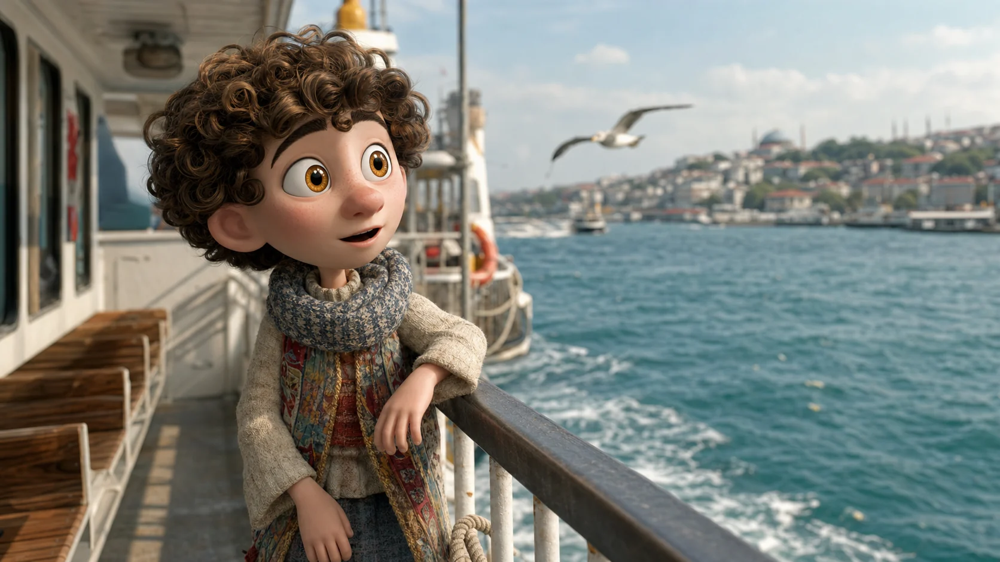
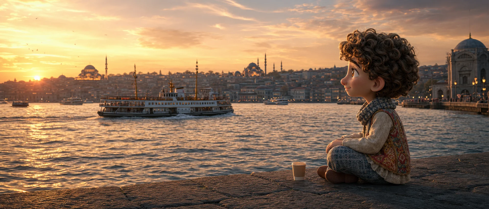
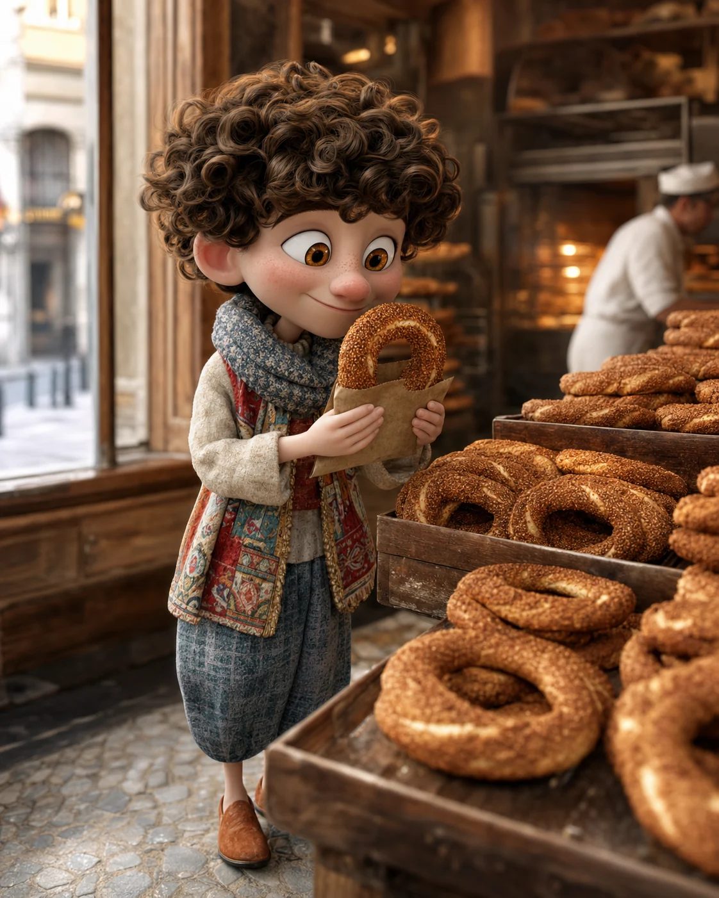
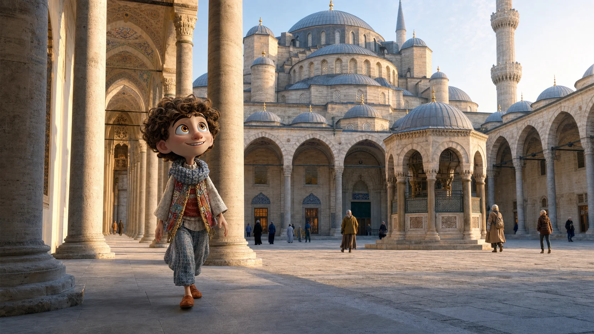
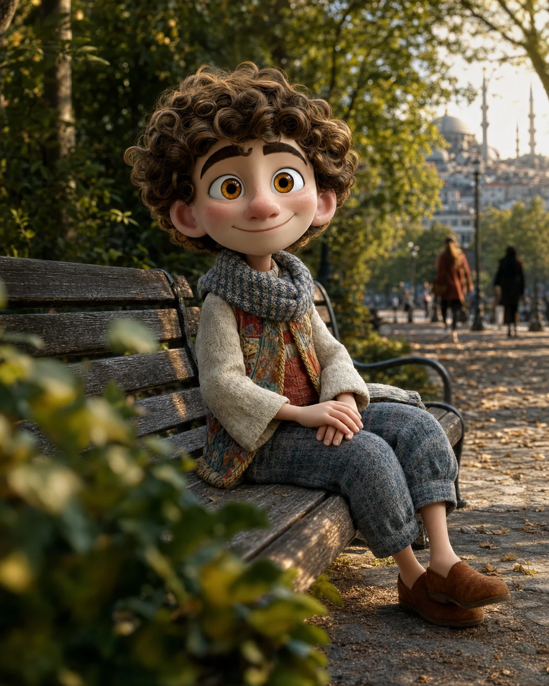
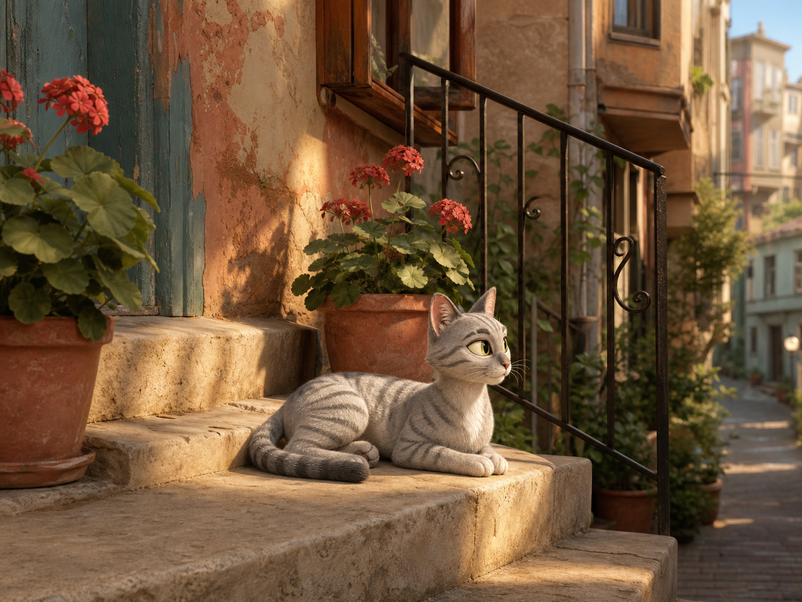

Megérkeztél
Találkozol Alival, köszönsz, és elkészül az első saját török mondatod.
Merhaba.Az első utazásod már elkezdődött
Valódi helyzetek, egy helyi barát. A török nyelv pedig útközben ragad rád.
Merhaba. Én Ali vagyok. Isztambul túl érdekes ahhoz, hogy leckékből ismerd meg.
Nem leckék. Egy nap emlékei.
Ali nem végigtanít egy tananyagon. Végigkísér egy napon, amelynek minden helyzete ad egy új mondatot.
Találkozol Alival, köszönsz, és elkészül az első saját török mondatod.
Merhaba.
08:20Te kéred ki a teát, és pontosan úgy érkezik, ahogy szereted.
Bir çay, lütfen.
10:15Ellenőrzöd a kártyádat, majd udvariasan utat kérsz az ajtóhoz.
Affedersiniz.
16:40Megkérdezed, jó hajóra szálltok-e, aztán kiválasztod a saját helyeteket.
Bu vapur Üsküdar'a gidiyor mu?
19:18Helyet választasz, megosztod a pillanatot, majd eldöntöd, készüljön-e fénykép.
Manzara çok güzel.
08:35Másnap te rendeled meg a simitet és döntöd el, kérsz-e mellé teát.
Bir simit, lütfen.
10:10Útbaigazítást kérsz, Ali pedig csendesen megmutatja a hely szokásait.
Giriş nerede? 12:30
12:30Kiválasztasz valamit, árat kérdezel, majd alkuszol vagy továbblépsz.
Bu ne kadar?
15:30Te választod meg a tempót, Ali pedig valóban hozzád igazodik.
Biraz dinlenelim. 17:10
17:10A végén már nem Ali mutatja az utat: te javasolsz közös programot.
Çay içelim.01 / 10 · Válassz egy kalandot
Ali jegyzeteHa elfáradunk,
itt megállunk.
Van időnk.
Egy nap Alival
Teát kérsz Karaköyben. Helyet keresel a kompon. Alkudozol a bazárban. Mire előkerül egy török mondat, már pontosan tudod, miért van rá szükséged.
Cihangir hétköznapi lakói
Az egyik a pékség előtt alszik, a másik egy motor ülésén, Mırmır pedig ezt a lépcsőt választotta. A környék ismeri őket. Ők pedig pontosan tudják, hol kerül elő egy tál víz.

Ali jegyzeteŐt nem hívtam.
Már itt lakott.
Ali meghívása
Nem kell tudnod törökül.
Elég, ha kíváncsi vagy.
Galata híd · Első pillanat
Nem teljesített leckék. Helyek, mondatok és pillanatok, amelyek már ismerősek.
Csak olyan apróságok, amelyekkel figyelmesebb útitárs lehet. Bármelyiket elfelejtheti, ha kéred.